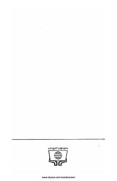

OLO'rta maktab o'quvchilari uchun mo'ljallangan o'zbekcha-ruscha lug'at.
Mazkur lug'at o'rta maktab o'quvchilari uchun mo'ljallangan bo'lib, o'zbekcha so'zlarning ruscha tarjimalarini o'z ichiga oladi. Kitob o'quvchilarga o'zbek tilidan rus tiliga tarjima qilishda va lug'at boyligini oshirishda amaliy yordam beradi.